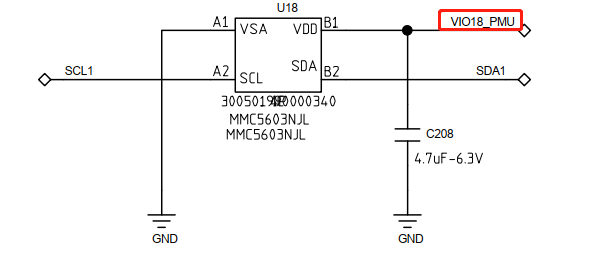

概述
磁感sensor MMC5603 sensorhub调试记录
硬件
目前kernel端是通的，sensorhub通了，但是校准有问题。
ITEM |
MMC5603NJL |
|---|---|
I2C总线及地址 |
i2c1 0x30 |
供电 |
VIO18_PUM |

1.校准库获取流程
Hal层通过maglibinfo节点绑定进入到驱动层寻找库，并返回相应字符串，通过字符串找到对应的libxxx.so
//vendor\mediatek\proprietary\hardware\sensor\sensors-1.0\VendorInterface.cpp
VendorInterface::VendorInterface() {
int fd = -1;
int len = 0;
char buf[64] = {0};
struct mag_libinfo_t libinfo;
struct magChipInfo chipinfo;
SensorList *mSensorList = nullptr;
ALOGI("VendorInterface constructor.");
lib_interface = NULL;
lib_handle = NULL;
memset(&libinfo, 0, sizeof(struct mag_libinfo_t));
memset(&chipinfo, 0, sizeof(struct magChipInfo));
fd = TEMP_FAILURE_RETRY(open("/sys/class/sensor/m_mag_misc/maglibinfo", O_RDWR));
if (fd >= 0) {
len = TEMP_FAILURE_RETRY(read(fd, &libinfo, sizeof(struct mag_libinfo_t)));
if (len <= 0) {
ALOGE("read libinfo err, len = %d\n", len);
close(fd);
return;
}
close(fd);
} else {
ALOGE("open vendor libinfo fail\n");
return;
}
libinfo.libname[LIB_NAME_LENGTH - 1] = '\0';
if (!isValidLibName(libinfo.libname)) {
ALOGE("invalid libname, length too long\n");
return;
}
strlcpy(buf, "lib", sizeof(buf));
strlcat(buf, libinfo.libname, sizeof(buf));
strlcat(buf, ".so", sizeof(buf));
lib_handle = dlopen(buf, RTLD_NOW);
if (!lib_handle) {
ALOGE("get lib_interface fail dlopen operation.\n");
lib_handle = NULL;
return;
}
dlerror();
lib_interface = (struct mag_lib_interface_t *)dlsym(lib_handle, "MAG_LIB_API_INTERFACE");
if (!lib_interface) {
ALOGE("get lib_interface fail dlsym operation.\n");
dlclose(lib_handle);
lib_handle = NULL;
return;
}
ALOGI("get lib_interface success.");
mSensorList = SensorList::getInstance();
chipinfo.hwGyro = mSensorList->hwGyroSupported();
chipinfo.deviceid = libinfo.deviceid;
chipinfo.layout = libinfo.layout;
lib_interface->initLib(&chipinfo);
}
内核驱动通过判断不同机型设置相应的校正库名称
// kernel-4.19/drivers/misc/mediatek/sensors-1.0/magnetometer/mmc5603/mmc5603x.c
static int get_terminal_type(void)
{
int i = 0;
int ret = 0;
char boot[BUFFER_LENGTH] = {'\0'};
char *match = (char *) strnstr(saved_command_line,
"androidboot.boardid=",
strlen(saved_command_line));
if (match) {
memcpy(boot, (match + strlen("androidboot.boardid=")), BUFFER_LENGTH);
for (i = 0; i < BUFFER_LENGTH; i++) {
if (! ISDIGIT(boot[i])) {
boot[i] = '\0';
break;
}
}
boot[BUFFER_LENGTH - 1] = '\0';
MEMSIC_INFO("%s: androidboot.boardid string is %s\n", __func__, boot);
if (kstrtoint(boot, 10, &ret) != 0)
ret = 0;
}
MEMSIC_INFO("%s: androidboot.boardid is %d\n", __func__, ret);
return ret;
}
static int mmc5603x_i2c_probe(struct i2c_client *client, const struct i2c_device_id *id)
{
...
int terminal_type = get_terminal_type();
if (((terminal_type >> 3) & 0x03) == TERMINAL_M50) {
if ((terminal_type & 0x07) == TERMINAL_M50_PLASTIC) {
strlcpy(ctl.libinfo.libname, "memsic9axis", sizeof(ctl.libinfo.libname));
MEMSIC_INFO("%s: M50 memsic 6 axis plastic lib\n");
} else {
strlcpy(ctl.libinfo.libname, "memsic9axismetal", sizeof(ctl.libinfo.libname));
MEMSIC_INFO("%s: M50 memsic 6 axis metal lib\n");
}
} else {
strlcpy(ctl.libinfo.libname, "memsic", sizeof(ctl.libinfo.libname));
MEMSIC_INFO("%s: M8 memsic 6 axis lib\n");
}
ctl.libinfo.deviceid = MMC5603x_DEVICE_ID;
err = mag_register_control_path(&ctl);
...
}
// kernel-4.19/drivers/misc/mediatek/sensors-1.0/magnetometer/mag.c
static ssize_t maglibinfo_show(struct device *dev,
struct device_attribute *attr, char *buf)
{
struct mag_context *cxt = mag_context_obj;
if (!buf)
return -1;
memcpy(buf, &cxt->mag_ctl.libinfo, sizeof(struct mag_libinfo_t));
return sizeof(struct mag_libinfo_t);
}
SDK校正库文件路径：
vendor/mediatek/proprietary/hardware/sensor/sensors-1.0/algorithm/calibration/6axis/M8/lib64/libmemsic.so
vendor/mediatek/proprietary/hardware/sensor/sensors-1.0/algorithm/calibration/6axis/M50_metal/libmemsic9axismetal.so
vendor/mediatek/proprietary/hardware/sensor/sensors-1.0/algorithm/calibration/6axis/M50_plastic/libmemsic9axis.so
设备中的校正库文件路径：
vendor/lib64/libmemsic.so
vendor/lib64/libmemsic9axis.so
vendor/lib64/libmemsic9axismetal.so
校准库获取优化
1.校准库兼容M50/M8直接通过读取设备节点，这样做的弊端就是，kernel磁感5603驱动关闭了或者更换型号，就无法通过节点read的方式获取校准库名称了，应该直接在hal层做兼容工作，优化如下：
VendorInterface::VendorInterface() {
memset(&libinfo, 0, sizeof(struct mag_libinfo_t));
memset(&chipinfo, 0, sizeof(struct magChipInfo));
fd = TEMP_FAILURE_RETRY(open("/sys/class/sensor/m_mag_misc/maglibinfo", O_RDWR));
if (fd >= 0) {
len = TEMP_FAILURE_RETRY(read(fd, &libinfo, sizeof(struct mag_libinfo_t)));
if (len <= 0) {
ALOGE("read libinfo err, len = %d\n", len);
close(fd);
return;
}
close(fd);
} else {
ALOGE("open vendor libinfo fail\n");
return;
}
property_get("ro.boot.boardid", value, "");
if (strcmp(value, "0") == 0) {
strlcpy(libinfo.libname, "memsic9axis", sizeof(libinfo.libname));
}
else if (strcmp(value, "2") == 0 || strcmp(value, "4") == 0) {
strlcpy(libinfo.libname, "memsic9axismetal", sizeof(libinfo.libname));
}
else {
strlcpy(libinfo.libname, "memsic", sizeof(libinfo.libname));
}
libinfo.libname[LIB_NAME_LENGTH - 1] = '\0';
if (!isValidLibName(libinfo.libname)) {
ALOGE("invalid libname, length too long\n");
return;
}
strlcpy(buf, "lib", sizeof(buf));
strlcat(buf, libinfo.libname, sizeof(buf));
strlcat(buf, ".so", sizeof(buf));
ALOGI("wugn test get libname %s\n", buf);
}
2.另外一种方法是将驱动中兼容功能移到common驱动中来：
--- a/kernel-4.19/drivers/misc/mediatek/sensors-1.0/magnetometer/mag.c
+++ b/kernel-4.19/drivers/misc/mediatek/sensors-1.0/magnetometer/mag.c
@@ -590,11 +590,65 @@ int mag_register_data_path(struct mag_data_path *data)
return 0;
}
+// [NEW FEATURE]-BEGIN by wugangnan@paxsz.com 2022-02-22, put Calibration library compatible Function in the common driver
+#define ISDIGIT(c) ((c) >= '0' && (c) <= '9')
+#define BUFFER_LENGTH 6
+#define TERMINAL_M50 0x00
+#define TERMINAL_M50_PLASTIC 0x00
+static int get_terminal_type(void)
+{
+ int i = 0;
+ int ret = 0;
+ char boot[BUFFER_LENGTH] = {'\0'};
+
+ char *match = (char *) strnstr(saved_command_line,
+ "androidboot.boardid=",
+ strlen(saved_command_line));
+
+ if (match) {
+ memcpy(boot, (match + strlen("androidboot.boardid=")), BUFFER_LENGTH);
+
+ for (i = 0; i < BUFFER_LENGTH; i++) {
+ if (! ISDIGIT(boot[i])) {
+ boot[i] = '\0';
+ break;
+ }
+ }
+ boot[BUFFER_LENGTH - 1] = '\0';
+
+ pr_err("%s: androidboot.boardid string is %s\n", __func__, boot);
+ if (kstrtoint(boot, 10, &ret) != 0)
+ ret = 0;
+
+ }
+ pr_err("%s: androidboot.boardid is %d\n", __func__, ret);
+
+ return ret;
+}
+// [NEW FEATURE]-END by wugangnan@paxsz.com 2022-02-22, put Calibration library compatible Function in the common driver
+
int mag_register_control_path(struct mag_control_path *ctl)
{
struct mag_context *cxt = NULL;
int err = 0;
-
+ // [NEW FEATURE]-BEGIN by wugangnan@paxsz.com 2022-02-22, put Calibration library compatible Function in the common driver
+ int terminal_type = get_terminal_type();
+
+ if (((terminal_type >> 3) & 0x03) == TERMINAL_M50) {
+ if ((terminal_type & 0x07) == TERMINAL_M50_PLASTIC) {
+ strlcpy(ctl->libinfo.libname, "memsic9axis", sizeof(ctl->libinfo.libname));
+ pr_err("%s: M50 memsic 6 axis plastic lib\n");
+ } else {
+ strlcpy(ctl->libinfo.libname, "memsic9axismetal", sizeof(ctl->libinfo.libname));
+ pr_err("%s: M50 memsic 6 axis metal lib\n");
+ }
+ } else {
+ strlcpy(ctl->libinfo.libname, "memsic", sizeof(ctl->libinfo.libname));
+ pr_err("%s: M8 memsic 6 axis lib\n");
+ }
+ printk("wugn test libname = %s\n",ctl->libinfo.libname);
+ // [NEW FEATURE]-END by wugangnan@paxsz.com 2022-02-22, put Calibration library compatible Function in the common driver
--- a/kernel-4.19/drivers/misc/mediatek/sensors-1.0/magnetometer/mmc5603/mmc5603x.c
+++ b/kernel-4.19/drivers/misc/mediatek/sensors-1.0/magnetometer/mmc5603/mmc5603x.c
@@ -999,41 +999,6 @@ static int mmc5603x_config(int en)
return 1;
}
-#define ISDIGIT(c) ((c) >= '0' && (c) <= '9')
-#define BUFFER_LENGTH 6
-#define TERMINAL_M50 0x00
-#define TERMINAL_M50_PLASTIC 0x00
-static int get_terminal_type(void)
-{
- int i = 0;
- int ret = 0;
- char boot[BUFFER_LENGTH] = {'\0'};
-
- char *match = (char *) strnstr(saved_command_line,
- "androidboot.boardid=",
- strlen(saved_command_line));
-
- if (match) {
- memcpy(boot, (match + strlen("androidboot.boardid=")), BUFFER_LENGTH);
-
- for (i = 0; i < BUFFER_LENGTH; i++) {
- if (! ISDIGIT(boot[i])) {
- boot[i] = '\0';
- break;
- }
- }
- }
- boot[BUFFER_LENGTH - 1] = '\0';
-
- MEMSIC_INFO("%s: androidboot.boardid string is %s\n", __func__, boot);
- if (kstrtoint(boot, 10, &ret) != 0)
- ret = 0;
-
- }
- MEMSIC_INFO("%s: androidboot.boardid is %d\n", __func__, ret);
-
- return ret;
-}
-
static int mmc5603x_i2c_probe(struct i2c_client *client, const struct i2c_device_id *id)
{
struct i2c_client *new_client;
@@ -1041,7 +1006,6 @@ static int mmc5603x_i2c_probe(struct i2c_client *client, const struct i2c_device
int err = 0;
struct mag_control_path ctl={0};
struct mag_data_path mag_data={0};
- int terminal_type = get_terminal_type();
MEMSIC_INFO("%s: enter probe,driver version=%s\n", __func__,DRIVER_VERSION);
@@ -1120,25 +1084,8 @@ static int mmc5603x_i2c_probe(struct i2c_client *client, const struct i2c_device
ctl.flush = mmc5603x_flush;
ctl.is_report_input_direct = false;
ctl.is_support_batch = data->hw->is_batch_supported;
- #if 1 //vsun,wzd modify
- // strlcpy(ctl.libinfo.libname, "memsicd5603x", sizeof(ctl.libinfo.libname));
- if (((terminal_type >> 3) & 0x03) == TERMINAL_M50) {
- if ((terminal_type & 0x07) == TERMINAL_M50_PLASTIC) {
- strlcpy(ctl.libinfo.libname, "memsic9axis", sizeof(ctl.libinfo.libname));
- MEMSIC_INFO("%s: M50 memsic 6 axis plastic lib\n");
- } else {
- strlcpy(ctl.libinfo.libname, "memsic9axismetal", sizeof(ctl.libinfo.libname));
- MEMSIC_INFO("%s: M50 memsic 6 axis metal lib\n");
- }
- } else {
- strlcpy(ctl.libinfo.libname, "memsic", sizeof(ctl.libinfo.libname));
- MEMSIC_INFO("%s: M8 memsic 6 axis lib\n");
- }
- //ctl.libinfo.layout = AKECS_SetCert();
- ctl.libinfo.deviceid = MMC5603x_DEVICE_ID; //akm_device;
- #else
- ctl.lib_name = "memsicd5603x";
- #endif
+
+ strlcpy(ctl.libinfo.libname, "memsicd5603x", sizeof(ctl.libinfo.libname));
校准库打印：
M8 main log打印：
02-17 13:03:49.277654 724 724 I VendorInterface: VendorInterface constructor.
02-17 13:03:49.277847 724 724 I VendorInterface: wugn test get libname libmemsic.so
02-17 13:03:49.293986 724 724 I VendorInterface: get lib_interface success. name = memsic
02-17 13:03:49.294223 724 724 E android.hardware.sensors@2.0-service-mediatek: MEMSIC_Init @line:84, magChipInfo->layout = 0, magChipInfo->deviceid = 16 hwGyro=0
02-17 13:03:49.294311 724 724 E android.hardware.sensors@2.0-service-mediatek: memsic memsicpara config.c ReadCalpara_FromFile: fail to open /vendor/etc/magpara
02-17 13:03:49.294333 724 724 E android.hardware.sensors@2.0-service-mediatek: memsic fail to load the calibration file use the default calpara
02-17 13:03:49.294366 724 724 E android.hardware.sensors@2.0-service-mediatek: memsic Soft magnetic parameters si[0][0]=0.997940
02-17 13:03:49.294388 724 724 E android.hardware.sensors@2.0-service-mediatek: memsic Soft magnetic parameters si[0][1]=0.007920
02-17 13:03:49.294408 724 724 E android.hardware.sensors@2.0-service-mediatek: memsic Soft magnetic parameters si[0][2]=-0.034510
02-17 13:03:49.294429 724 724 E android.hardware.sensors@2.0-service-mediatek: memsic Soft magnetic parameters si[1][0]=-0.001610
02-17 13:03:49.294436 736 736 I thermal_repeater: START+++++++++ 736
02-17 13:03:49.294450 724 724 E android.hardware.sensors@2.0-service-mediatek: memsic Soft magnetic parameters si[1][1]=1.032520
02-17 13:03:49.294470 724 724 E android.hardware.sensors@2.0-service-mediatek: memsic Soft magnetic parameters si[1][2]=-0.039050
02-17 13:03:49.294636 424 424 I wmt_launcher: cmd(srh_rom_patch) resp(ok)
02-17 13:03:49.294707 424 424 I wmt_launcher: (persist.vendor.connsys.fwlog.status) is not supported
02-17 13:03:49.294878 736 736 I thermal_repeater: Success to write 736 to /proc/driver/thermal/clwmt_pid
02-17 13:03:49.295020 736 736 I thermal_repeater: Success to write 736 to /proc/driver/thermal/clmutt_tm_pid
02-17 13:03:49.295722 724 724 E android.hardware.sensors@2.0-service-mediatek: memsic Soft magnetic parameters si[2][0]=0.064170
02-17 13:03:49.295784 724 724 E android.hardware.sensors@2.0-service-mediatek: memsic Soft magnetic parameters si[2][1]=0.023310
02-17 13:03:49.295818 724 724 E android.hardware.sensors@2.0-service-mediatek: memsic Soft magnetic parameters si[2][2]=1.045070
02-17 13:03:49.295839 724 724 E android.hardware.sensors@2.0-service-mediatek: memsic iniAccuracy=0
02-17 13:03:49.295860 724 724 E android.hardware.sensors@2.0-service-mediatek: memsic ts=0.020000
02-17 13:03:49.295902 724 724 E android.hardware.sensors@2.0-service-mediatek: FusionAlgoVersion: MEMSIC_CALI_20210907 Accuracy= 0
02-17 13:03:49.295927 724 724 E android.hardware.sensors@2.0-service-mediatek: CaliAlgoVersion: MEMSIC_CALI_20210907
02-17 13:03:49.295956 724 724 E android.hardware.sensors@2.0-service-mediatek: SI Matrix: 0.9979 0.0079 -0.0345 -0.0016 1.0325 -0.0391 0.0642 0.0233 1.0451
02-17 13:03:49.296075 724 724 I SensorManager: createSensorConnection connection=0xb40000710315ac70, moudle=1.
M50金属版本打印：
02-23 17:05:36.079951 708 708 I VendorInterface: VendorInterface constructor.
02-23 17:05:36.080303 708 708 I VendorInterface: wugn test get libname libmemsic9axismetal.so
02-23 17:05:36.082824 476 476 I ServiceManager: Waiting for service 'statscompanion' on '/dev/binder'...
02-23 17:05:36.095942 708 708 I VendorInterface: get lib_interface success. name = memsic9axismetal
02-23 17:05:36.096126 708 708 D android.hardware.sensors@2.0-service-mediatek: MEMSIC_Init @line:58, magChipInfo->layout = 0, magChipInfo->deviceid = 16
02-23 17:05:36.096179 708 708 E android.hardware.sensors@2.0-service-mediatek: MMCKJ6a initial start 01 0
02-23 17:05:36.096280 708 708 I SensorManager: createSensorConnection connection=0xb40000764e831cc0, moudle=1.
M50塑胶版本打印：
02-23 17:37:14.840610 726 726 I VendorInterface: VendorInterface constructor.
02-23 17:37:14.840800 726 726 I VendorInterface: wugn test get libname libmemsic9axis.so
02-23 17:37:14.841730 717 732 I ServiceManager: Waiting for service 'package_native' on '/dev/binder'...
02-23 17:37:14.845868 542 542 I BufferQueueProducer: [FramebufferSurface](id:21e00000000,api:1,p:501,c:542) connect(): api=1 producerControlledByApp=false
02-23 17:37:14.846839 365 844 W libc : Unable to set property "ctl.interface_start" to "vendor.hardware.betterlife.fingerprint@1.0::IBtlFingerprint/default": error code: 0x20
02-23 17:37:14.852451 646 705 W mnld : thread_adc_capture_init: open_port: Unable to open /dev/gps_emi, retry:2
02-23 17:37:14.852536 500 500 E ion : ioctl c0044901 failed with code -1: Invalid argument
02-23 17:37:14.852707 500 500 E ion : ioctl c0204900 failed with code -1: No such device
02-23 17:37:14.853545 726 726 I VendorInterface: get lib_interface success. name = memsic9axis
02-23 17:37:14.853703 726 726 D android.hardware.sensors@2.0-service-mediatek: MEMSIC_Init @line:58, magChipInfo->layout = 0, magChipInfo->deviceid = 16
02-23 17:37:14.853752 726 726 E android.hardware.sensors@2.0-service-mediatek: MMCKJ6a initial start 01 0
02-23 17:37:14.853902 726 726 I SensorManager: createSensorConnection connection=0xb400007824fe7370, moudle=1.
但是由于某些问题，将校准库兼容改到hal层处理：
--- a/vendor/mediatek/proprietary/hardware/sensor/sensors-1.0/VendorInterface.cpp
+++ b/vendor/mediatek/proprietary/hardware/sensor/sensors-1.0/VendorInterface.cpp
@@ -43,6 +43,8 @@
#include "SensorList.h"
#include "VendorInterface.h"
+#include <cutils/properties.h>
+
#undef LOG_TAG
#define LOG_TAG "VendorInterface"
@@ -81,6 +83,7 @@ VendorInterface::VendorInterface() {
struct mag_libinfo_t libinfo;
struct magChipInfo chipinfo;
SensorList *mSensorList = nullptr;
+ char value[PROPERTY_VALUE_MAX];
ALOGI("VendorInterface constructor.");
@@ -102,6 +105,20 @@ VendorInterface::VendorInterface() {
ALOGE("open vendor libinfo fail\n");
return;
}
+
+ // [NEW FEATURE]-BEGIN by wugangnan@paxsz.com 2022-02-24, put Calibration library compatible Function in hal,not in kernel driver
+ property_get("ro.boot.boardid", value, "");
+ if (strcmp(value, "0") == 0) {
+ strlcpy(libinfo.libname, "memsic9axis", sizeof(libinfo.libname));
+ }
+ else if (strcmp(value, "2") == 0 || strcmp(value, "4") == 0) {
+ strlcpy(libinfo.libname, "memsic9axismetal", sizeof(libinfo.libname));
+ }
+ else {
+ strlcpy(libinfo.libname, "memsic", sizeof(libinfo.libname));
+ }
+ // [NEW FEATURE]-END by wugangnan@paxsz.com 2022-02-24, put Calibration library compatible Function in hal,not in kernel driver
2.数据不准分析
单位：
微特斯拉（micro-Tesla），用uT表示。 单位也可以是高斯（Gauss），1Tesla=10000Gauss。1Gauss = 100uT，六轴入口单位是Gauss，九轴是uT。
1.原始数据上报单位确认
首先分析kernel和sensorhub里面原始数据上报的单位：
freertos/source/middleware/contexthub/MEMS_Driver/magnetometer/mmc5603.c寄存器原始数据是16bit，范围是0~65535。第一步是减去32768的偏移值，变成-32768 ~ +32768量程。第二步是确定方向，得到数组remap_data。第三步除以1024后得到的单位是uT，再乘以100得到单位是Gauss，也就是说sensorhub上传的数据的高斯:
static int mmc5603Convert(I2cCallbackF i2cCallBack, SpiCbkF spiCallBack, void *next_state,
{
idata[AXIS_X] = (int)((uint16_t)((mTask.rxBuf[0] << 8) + (uint16_t)(mTask.rxBuf[1])));
idata[AXIS_Y] = (int)((uint16_t)((mTask.rxBuf[2] << 8) + (uint16_t)(mTask.rxBuf[3])));
idata[AXIS_Z] = (int)((uint16_t)((mTask.rxBuf[4] << 8) + (uint16_t)(mTask.rxBuf[5])));
data[0].x = idata[AXIS_X];
data[0].y = idata[AXIS_Y];
data[0].z = idata[AXIS_Z];
data[0].x -= 32768;
data[0].y -= 32768;
data[0].z -= 32768;
remap_data[mTask.cvt.map[AXIS_X]] = mTask.cvt.sign[AXIS_X] * data[0].x;
remap_data[mTask.cvt.map[AXIS_Y]] = mTask.cvt.sign[AXIS_Y] * data[0].y;
remap_data[mTask.cvt.map[AXIS_Z]] = mTask.cvt.sign[AXIS_Z] * data[0].z;
data[0].x = remap_data[AXIS_X] * 100.0f / 1024;
data[0].y = remap_data[AXIS_Y] * 100.0f / 1024;
data[0].z = remap_data[AXIS_Z] * 100.0f / 1024;
printf("%s:: remaped: %f %f %f;;;raw: %f %f %f\n",__func__,(double)remap_data[0],(double)remap_data[1],(double)remap_data[2],(double)data[0].x,(double)data[0].y,(double)data[0].z);
}
drivers/misc/mediatek/sensors-1.0/magnetometer/mmc5603/mmc5603x.c可以看到，驱动中只是将原始数据变换量程和方向，所以并没有单位:
mmc5603x_i2c_probe(struct i2c_client *client, const struct i2c_device_id *id)
{
mag_data.get_data = mmc5603x_get_data;
* ECS_GetRawData(data);
}
static int ECS_GetRawData(int data[3])
{
int err = 0;
int data_temp[3] = {0};
struct mmc5603x_i2c_data *obj = i2c_get_clientdata(this_client);
if(NULL == obj)
{
MEMSIC_ERR("mmc5603x_i2c_data is null!!\n");
return 0;
}
err = ECS_ReadXYZData(data, 3);
if(err !=0 )
{
MEMSIC_ERR("MMC5603X_IOC_TM failed\n");
return -1;
}
data_temp[0] = data[0] - 32768;
data_temp[1] = data[1] - 32768;
data_temp[2] = data[2] - 32768;
data[obj->cvt.map[0]] = obj->cvt.sign[0] * data_temp[0];
data[obj->cvt.map[1]] = obj->cvt.sign[1] * data_temp[1];
data[obj->cvt.map[2]] = obj->cvt.sign[2] * data_temp[2];
return err;
}
2.hal层单位获取情况
1.经过分析，得知sensorhub上传的数据的高斯，而kernel则还是原始数据，看看hal层如何处理,主要关注
processEvent函数中的DATA_ACTION：vendor/mediatek/proprietary/hardware/sensor/sensors-0.1/Magnetic.cpp:
void MagneticSensor::processEvent(struct sensor_event const *event) {
#ifndef MAG_CALIBRATION_IN_SENSORHUB
struct sensorData inputData;
struct sensorData outputData;
static int32_t lastStatus = 0;
memset(&inputData, 0, sizeof(struct sensorData));
memset(&outputData, 0, sizeof(struct sensorData));
#endif
if (event->flush_action == DATA_ACTION) {
mPendingEvent.version = sizeof(sensors_event_t);
mPendingEvent.sensor = ID_MAGNETIC;
mPendingEvent.type = SENSOR_TYPE_MAGNETIC_FIELD;
mPendingEvent.timestamp = event->time_stamp;
mPendingEvent.magnetic.status = event->status;
1.sensorhub或者kernel上传的数据首先除以10，发现这里被剑锋改过，原始除数是(float)mDataDiv。
mPendingEvent.magnetic.x = (float)event->word[0] / 10.0;
mPendingEvent.magnetic.y = (float)event->word[1] / 10.0;
mPendingEvent.magnetic.z = (float)event->word[2] / 10.0;
2.如果不是在sensorhub中完成校准，首先调用magRunCalibration完成磁场校准，如果两次status不一样，算出bias，这里不关心。
#ifndef MAG_CALIBRATION_IN_SENSORHUB
inputData.data[0] = mPendingEvent.magnetic.x;
inputData.data[1] = mPendingEvent.magnetic.y;
inputData.data[2] = mPendingEvent.magnetic.z;
inputData.status = mPendingEvent.magnetic.status;
inputData.timeStamp = mPendingEvent.timestamp;
mSensorCalibration->magRunCalibration(&inputData, &outputData);
mPendingEvent.magnetic.x = outputData.data[0];
mPendingEvent.magnetic.y = outputData.data[1];
mPendingEvent.magnetic.z = outputData.data[2];
mPendingEvent.magnetic.status = outputData.status;
if (mPendingEvent.magnetic.status != lastStatus) {
mSensorCalibration->magGetCalibration(&outputData);
magBias[0] = outputData.data[0];
magBias[1] = outputData.data[1];
magBias[2] = outputData.data[2];
mSensorSaved.saveCalibrationFloat(MAG_BIAS_SAVED_DIR, MAG_TAG_BIAS, magBias, 3);
ALOGI("write bias: [%f, %f, %f]\n", magBias[0], magBias[1], magBias[2]);
}
lastStatus = mPendingEvent.magnetic.status;
#else
mPendingEvent.magnetic.status = magAccuracyUpdate(mPendingEvent.magnetic.x,
mPendingEvent.magnetic.y, mPendingEvent.magnetic.z, event->status);
#endif
#ifdef DEBUG_PERFORMANCE
if(1 == event->reserved) {
mPendingEvent.gyro.status = event->reserved;
mark_timestamp(ID_MAGNETIC, android::elapsedRealtimeNano(), mPendingEvent.timestamp);
}
#endif
}
}
补上剑锋修改：
Author: zengjf <zengjianfeng@paxsz.com>
Date: Sun Apr 11 14:44:00 2021 +0800
移植传感器驱动及地磁9轴校正库
[Summary]:
1. 移植加速度、陀螺仪、地磁、光感、近距传感器Linux驱动；
2. 修改Sensor HAL层满足数据转换关系；
3. 移植地磁9轴校正库；
4. Android方向传感器分为未校正和有校正过两种，需要注意二选一；
[Test Plan]: NO
[Module]: Sensor
[Model]: M8
[author]: zengjianfeng@paxsz.com
[date]: 2021-04-11
- mPendingEvent.magnetic.x = (float)event->word[0] / (float)mDataDiv;
- mPendingEvent.magnetic.y = (float)event->word[1] / (float)mDataDiv;
- mPendingEvent.magnetic.z = (float)event->word[2] / (float)mDataDiv;
+ mPendingEvent.magnetic.x = (float)event->word[0] / 10.0;
+ mPendingEvent.magnetic.y = (float)event->word[1] / 10.0;
+ mPendingEvent.magnetic.z = (float)event->word[2] / 10.0;
2.再看看
mDataDiv是怎么得出来的，在MagneticSensor类的构造函数(构造函数是类的一种特殊的成员函数，它会在每次创建类的新对象时执行)中读取节点获取，通过log看是sensorhub代码是100：
log打印：
02-17 13:03:49.271349 724 724 D Magnetic: misc path =/sys/class/sensor/m_mag_misc/
02-17 13:03:49.271782 724 724 I Magnetic: read div buf(/sys/class/sensor/m_mag_misc/magactive), mdiv_M 100
02-17 13:03:49.273001 745 745 D ipsec_policy_mont: threaid priority -20,result:0
02-17 13:03:49.274959 724 724 I Magnetic: read bias: [31.359375, 533.406250, -206.000000]
02-17 13:03:49.275105 724 724 E SensorSaved: settings file(/mnt/vendor/nvcfg/sensor/mag_cali.json) open failed: -2 (No such file or directory)
02-17 13:03:49.275154 724 724 I Magnetic: read cali parameter: [0, 0, 0, 0, 0, 0]
MagneticSensor::MagneticSensor()
{
mDataDiv = 1;
if (mSensorReader.selectSensorEventFd(DEVICE_PATH) >= 0) {
strlcpy(input_sysfs_path, "/sys/class/sensor/m_mag_misc/", sizeof(input_sysfs_path));
input_sysfs_path_len = strlen(input_sysfs_path);
} else {
ALOGE("couldn't find input device\n");
}
ALOGD("misc path =%s", input_sysfs_path);
fd = TEMP_FAILURE_RETRY(open(datapath1, O_RDWR));
if (fd >= 0) {
len = TEMP_FAILURE_RETRY(read(fd, buf, sizeof(buf) - 1));
if (len <= 0) {
ALOGE("read div err, len = %d", len);
} else {
buf[len] = '\0';
sscanf(buf, "%d", &mDataDiv);
ALOGI("read div buf(%s), mdiv_M %d\n", datapath1, mDataDiv);
}
close(fd);
} else {
ALOGE("open misc path %s fail\n", datapath1);
}
}
3.继续跟进kernel驱动和sensorhub驱动，两个驱动是二选一的：
mag.c:
static ssize_t magactive_show(struct device *dev,
struct device_attribute *attr, char *buf)
{
struct mag_context *cxt = NULL;
int div = 0;
cxt = mag_context_obj;
div = cxt->mag_dev_data.div;
pr_debug("mag mag_dev_data m_div value: %d\n", div);
return snprintf(buf, PAGE_SIZE, "%d\n", div);
}
mmc5603x.c:
static int mmc5603x_i2c_probe(struct i2c_client *client, const struct i2c_device_id *id)
{
mag_data.div = CONVERT_M_DIV;
}
mmc5603x.h:
#define CONVERT_M_DIV 1024
sensorhub驱动：
maghub.c:
static int maghub_probe(struct platform_device *pdev)
{
mag_data.div = CONVERT_M_DIV;
}
maghub.h:
#define CONVERT_M_DIV 100
4.以上代码可以得出结论就是，sensorhub传上来的是高斯单位，原始代码是除以
CONVERT_M_DIV（100），hal层单位转换为微特斯拉uT，而现在改为除以10，数据不对，fae说大了10倍就是这个原因，需要将hal代码改回去，用定义好的CONVERT_M_DIV。
有个疑问，不知道为什么kernel上报需要单位是高斯，而sensorhub的是uT？
sensorhub公式：
sensorhub_data = raw_data / 1024 * 100 单位高斯
CONVERT_M_DIV = 100
kernel公式：
kernel_data = raw_data
CONVERT_M_DIV = 1024
hal层处理：
data/div
kernel相当于raw_data/1024，单位是uT
hub相当于高斯/100，单位是uT